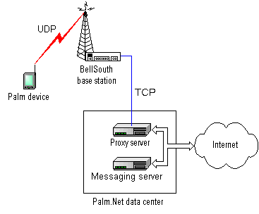

Palm OS Programmer's Companion
 12
Internet and Messaging Applications
12
Internet and Messaging Applications
NOTE: The information in this chapter currently applies only to the system software installed on the Palm VII™ device.
- The Palm OS® version 3.2 provides support for wireless Internet access and messaging via the Palm.Net wireless network. This chapter discusses the following topics:
- Most of the information in this chapter applies to wireline connects as well as wireless connections. It is possible for developers to connect to the Palm.Net network via a wired modem through an Internet Service Provider for testing, though normal users will access Palm.Net via the built-in wireless modem.
- For more information about Palm query applications and content style guidelines for the Palm VII device, refer to the Web Clipping Developer's Guide.
Overview of the Palm.Net System
- Before developing content and applications for the Palm VII device, it's useful to understand the whole Palm.Net system. The Palm VII device is just one part of a system that delivers data wirelessly from the Internet to the Palm device.
- The system is designed to work differently from a web browser application running on a desktop computer. The Palm.Net system is designed to best support access to real-time data, not casual browsing. Browsing is possible, but the increased cost and volume of data involved with visiting most standard web sites makes it impractical over a wireless network.
- Typical scenarios involve users accessing the following kinds of information on the Internet: news, sports scores, weather, traffic reports, driving directions, airline schedules and flight information, stock quotes, hotel and restaurant information, email, etc.
- Constraints on Palm wireless applications include the high cost to users of radio usage, low bandwidth, and increased battery consumption when the radio is on. Palm designed the system to make the best use of resources given these constraints. You must also keep these constraints in mind when designing applications that use the wireless capabilities of the unit.
- In particular, note the pricing model for the wireless service. Users are charged a flat monthly fee for a modest number of bytes transmitted and received. Once the limit is exceeded, users are charged for each additional byte sent or received by their Palm device. It's imperative that applications using the wireless services minimize the number of bytes sent and received, to avoid contributing to large airtime charges for users.
- Content developers wishing to customize web pages for optimal display on Palm VII devices should follow the design guidelines described in the Web Clipping Developer's Guide. A web site that conforms to these style guidelines and contains the
<META NAME="PalmComputingPlatform" CONTENT="True"> HTML tag is considered Palm friendly.
NOTE: The Internet applications described in this chapter rely on the Internet library (INetLib) for wireless connectivity functions, and the Internet library uses the net library (NetLib). Applications cannot directly use the net library to make wireless connections.
Palm Query Applications
- The primary mechanism that Palm has provided for users to interact with the WWW (World Wide Web) is the Palm query application (PQA). Palm query applications encapsulate locally stored HTML content, possibly including one or more query forms, through which the user can submit requests for information from the WWW. Returned data, called web clippings, are displayed by the web clipping viewer application (called Clipper here) that runs on the Palm device.
- Note that Clipper does not appear as a separate application in the Launcher; it is invoked automatically when a query application is launched. End users don't see the term "Clipper" anywhere in the user interface or user documentation, so you should not confuse them by using this term in your application documentation, readme files, or help screens.
- Palm query applications are created by the Query Application Builder program that runs on a desktop computer. This program translates one or more pages of HTML content into a single compact database (.pqa file) that the user installs on the Palm device.
- When creating the .pqa file, the Query Application Builder translates HTML into a compressed format. The Clipper application works with this compressed format, rather than HTML directly. The reason for this is that HTML is an inefficient format for the transmission of data over the network and storage of information. Compression minimizes the amount of information sent over the radio and reduces the size of query applications stored on the Palm device.
- GIF and JPEG images incorporated into source HTML files are converted to the Palm bitmap format (2-bit graphics) before being stored in the query application file.
Palm.Net System Overview
- The physical Palm.Net network is illustrated in Figure 12.1.
Figure 12.1 Palm.Net Network

- The Palm VII device communicates via radio modem to a nearby BellSouth Wireless Data network base station. From there, data is sent over a private link to the Palm Web Clipping Proxy server in the Palm data center. The proxy server interprets user requests and passes them to other computers on the Internet, using standard HTTP protocols, to handle as appropriate.
- Responses are sent back to the proxy server, which communicates them to the Bell South wireless network and back to the Palm VII device via radio modem.
- The wireless radio link operates at approximately 8 kbps, so is best suited for exchanging small amounts of information. After accounting for headers, error correction, and other overhead, the effective data throughput is roughly 2 kbps, so compactness is critical.
Palm Web Clipping Proxy Server
- The Palm Web Clipping Proxy server is a key part of the system. This server is responsible for accepting and responding to queries sent by the Palm VII device.
- The server supports three high-level protocols: HTTP, HTTPS, and the Palm messaging protocol (used by the iMessenger application). Requests using HTTP and HTTPS are forwarded to the Internet. Requests using the messaging protocol are forwarded to the Palm messaging server, which handles email communication to the Internet.
UDP
- One way that Palm optimizes the limited network bandwidth is to use UDP (User Datagram Protocol). All communications between the Palm VII device and the wireless network use UDP. This transmission protocol is extremely efficient and lightweight, resulting in the exchange of the fewest packets possible over the wireless network. Often requests and responses require just a single packet of data each. This is much more efficient than the relatively verbose TCP (Transmission Control Protocol). Using UDP decreases user airtime costs because fewer packets are required for each request and response.
- UDP does not normally function as a reliable protocol, however, the wireless connection between the Palm device and the BellSouth Wireless Data network has guaranteed delivery and reliability built into it via other mechanisms, so there is no need for the extra overhead of a full connection-oriented protocol such as TCP.
- WWW requests that are passed to the Internet by the proxy server use TCP to guarantee reliability over the Internet.
- Note that in a debugging wired connection scenario, TCP is used instead of UDP between the Palm device and the proxy server.
Compressed HTML
- Another way that Palm efficiently uses the limited bandwidth of the Palm.Net system is to compress HTML.
- Web clippings are rendered on the Palm VII device by the Clipper application. Clipper renders compressed HTML data. Both the query applications and WWW data returned from the Internet are compressed.
- When creating Palm query applications, the Query Application Builder program compresses HTML content and combines multiple HTML pages and images into a single query application.
- All HTML information returned to the Palm device from the Internet is dynamically compressed by the Palm Web Clipping Proxy server before transmission through the wireless network to the Palm device.
- It's important to note that the Palm device accesses standard HTML data that resides on standard HTML web servers on the Internet. The compression by the proxy server is transparent to the user and the web server on the Internet.
- If a web page that is not Palm-friendly is browsed, the proxy server removes images, scripting code, Java code, frames, and other non-supported elements before sending the content to the Palm device. Additionally, the content is truncated to prevent large amounts of unexpected data from being transmitted. The user can request more data as desired.
Security
- All wired parts of the network support security via the SSL (Secure Sockets Layer) protocol widely used by servers and browsers on the Internet. However, SSL is impractical to run over a low bandwidth wireless network because it is quite verbose.
- Palm implemented a level of security for the wireless portion of the network that is equivalent to the 128-bit SSL encryption algorithms, but optimized for use on a wireless network. The wireless part of the network is protected by a security system that includes encryption, message integrity checking, and server authentication.
- Message encryption is done via an elliptic curve cryptography engine supplied by Certicom Corporation. Message integrity checking protects against transmission errors or message manipulation. Server authentication prevents the wireless session between the Palm device and the proxy server from being hijacked or spoofed.
- Note that despite the optimized security scheme, secure transmissions inherently increase the size of the data packet, slowing its transmission over the network relative to unsecure transmissions.
System Version Checking
- Before using any special features of the operating system for the Palm VII device, you must check to ensure they are present. You can ensure that you are running on a device that supports the wireless internet access features by checking for the existence of the Clipper and iMessenger applications. Here's an example of how to check for Clipper:
DmSearchStateType searchState;
UInt16* cardNo;
LocalID* dbID;
err = DmGetNextDatabaseByTypeCreator(true, &searchState, sysFileTApplication, sysFileCClipper, true, &cardNo, &dbID);
- If Clipper is not present, the
DmGetNextDatabaseByTypeCreator routine returns an error. To check for iMessenger, you can use the creator type sysFileCMessaging.
- For more information on checking system compatibility, see the appendix "Compatibility Guide".
-
-
Using Clipper to Display Information
- You can use launch codes to open Clipper and display content.
- To launch Clipper and display a PQA, use the launch code
- To launch Clipper and display any URL, use the launch code
IMPORTANT: Keep in mind that browsing web sites that are complex or not Palm-friendly may possibly result in higher latency and airtime charges for the user. If a web page that is not Palm-friendly is browsed, the proxy server removes images, scripting code, Java code, frames, and other non-supported elements before sending the content to the Palm device.
Listing 12.1 Launching Clipper with a URL
Err GoToURL(Char* origurl)
{ // parameter is ptr to URL string
Err err;
Char* url;
DmSearchStateType searchState;
UInt16* cardNo;
LocalID* dbID;
// make a copy of the URL, since the OS will free
// the parameter once Clipper quits
url = MemPtrNew(StrLen(origurl));
if (!url) return sysErrNoFreeRAM;
StrCopy(url, origurl);
MemPtrSetOwner(url, 0);
// find clipper and launch it
err = DmGetNextDatabaseByTypeCreator (true, &searchState, sysFileTApplication, sysFileCClipper, true, &cardNo, &dbID);
if (err) { // Clipper is not present
FrmAlert(NoClipperAlert);
MemPtrFree(url);
}
else
err = SysUIAppSwitch(cardNo,dbID,sysAppLaunchCmdGoToURL,url);
return err; // 0 means no error
}
Launching Other Applications from Clipper
- Clipper can launch other applications via two special types of URLs:
palm and palmcall. In a query application, you might want to use the palmcall URL to hand some data to a different application to process and/or display while Clipper is running. This would be useful for graphing a set of numbers, for example.
- Both of these URL types take a URL string in the following form:
palm:cccc.tttt?params
- or
palmcall:cccc.tttt?params
- cccc is a four character creator name and tttt is a four character database type. These parts identify the application to launch. After the question mark (?), the params portion of the string can be any text you want. The entire URL string is passed to the application to use in any manner.
- Here's an example of an HTML anchor that uses the
palm URL type to link to the Memo Pad application:
<A HREF="palm:memo.appl">Memo Pad</A>
- Use the
palm URL to cause Clipper to launch another application with the SysUIAppSwitch routine. This causes Clipper to quit before the other application is launched.
- Use the
palmcall URL to cause Clipper to sublaunch another application with the SysAppLaunch routine. Clipper stays in the background and resumes execution when the other application quits. It's important to note that in this situation, the sublaunched application does not have access to its global variables or to code outside segment 0 (in a multi-segment application).
- The Clipper application handles these URLs by sending the
Sending Messages
- You can send messages via the built-in iMessenger application in 3 ways:
- Use the standard
mailto URL in Clipper, passing an email address, for example, "mailto:info@palm.com". This launches iMessenger, passing the email address for the "To" field. Optionally, you can include the subject ("mailto:info@palm.com?subject=foo") and/or body ("mailto:info@palm.com?subject=foo&body=bar") text in the URL. Internally, this launches iMessenger using the next method.
- Use the sysAppLaunchCmdAddRecord launch code to launch iMessenger with its editor open (optionally filling in some of the fields via the passed parameter block). This allows the user to edit the email. To make iMessenger display the message in its editor, set the
edit field in the parameter block to true.
- Use the sysAppLaunchCmdAddRecord launch code to silently add an item (the email) to the iMessenger outbox database. You must pass all the needed information in the parameter block. To prevent iMessenger from displaying the message in its editor, set the
edit field in the parameter block to false.
- When launched via the
sysAppLaunchCmdAddRecord launch code, the iMessenger application returns an error code, or 0 if there was no error.
- To send a launch code to the iMessenger application, you will need obtain its database id. You can use
sysFileCMessaging for the creator parameter.
- Note that adding an item to the iMessenger outbox does not actually send the message over the radio. It simply stores the message in the outbox until the user later opens iMessenger and chooses to send queued messages. This always gives the user control over when the radio is used.
New keyDownEvent Key Codes
- The OS on the Palm VII device provides special
keyDownEvent virtual key codes to support the wireless capabilities. These include:
vchrHardAntenna, which signals that the user has raised the antenna, activating the radio
vchrRadioCoverageOK, which signals that the unit is within radio coverage following a coverage check
vchrRadioCoverageFail, which signals that the unit is outside radio coverage following a coverage check, and thus cannot communicate with the Palm.Net system
- Virtual key codes are passed in the
keyCode field of a keyDownEvent data block, as described in the section "keyDownEvent" .
- Normally, you ignore these events in your application event handler, and let the system event handler handle them. For example, the
vchrHardAntenna event causes the system to invoke the Launcher and switch to the Palm.Net category. If you want to do something different in your application, you must trap and handle the event in your application event handler.
- Alternatively, if you want your application to have control over the antenna (avoiding having the system switch to the Launcher on a
vchrHardAntenna event), you can open the Internet library when your application starts, by calling INetLibOpen. You need to open the Internet library with the default or wireless configuration. When your application exits, you must close the Internet library by calling INetLibClose. For more information about using the Internet library, see Chapter 11, "Network Communication."
Over the Air Characters
- One of the overriding user interface design goals of the Palm VII system is to always give the user control when making a wireless transaction, partly because of the costs associated with doing so. In order that the user can recognize when an action causes a wireless transaction, you must use a special character in user interface buttons that cause wireless transactions. This alerts the user that tapping the button will result in a wireless transaction and its associated cost and latency. The user must never be surprised that a wireless transaction has occurred as a result of an action they initiated.
- Applications that cause data to be transmitted from the Palm VII device must use two special characters in their user interface buttons, as shown in Figure 12.2.
Figure 12.2 Over the Air Characters
- If you have a button, that when tapped, causes data to be transmitted, the button text must end with the "Over the air" character (
chrOta). This alerts the user that tapping the button will cause data transmission and incur possible airtime charges.
- If you have a button, that when tapped, causes data to be transmitted securely, the button text must end with the "Over the air secure" character (
chrOtaSecure). This alerts the user that tapping the button will cause secure data transmission and incur possible airtime charges.
- Note that the Clipper application automatically adds these special characters when rendering remote hyperlinks or buttons. You only need to explicitly add these characters if you are building an application that doesn't use this capability of Clipper.
-
Palm OS Programmer's Companion
This is page 81 of 85 in this book
Palm Computing Platform Development Zone
Copyright © 2000, Palm, Inc. All rights
reserved.